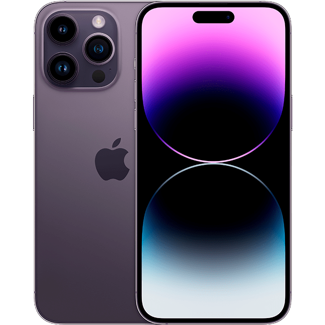

iPhone 14 Pro Max

- Pantalla:cuenta con una pantalla OLED de alta calidad
con resolución que ofrece colores vivos, negros profundos
y una excelente calidad de imagen.
- Cámara:Tiene triple lente mejorada: La cámara de triple
lente del iPhone 14 Pro Max ha sido mejorada con nuevas
tecnologías de procesamiento de imagen y sensores más grandes,
lo que permite obtener fotos y videos de alta calidad con un
alto nivel de detalle y un rango dinámico ampliado
- Conectividad:El iPhone 14 Pro Max es compatible con la tecnología
de red 5G, lo que permite una velocidad de descarga y carga más
rápida, y una mayor capacidad de conexión en áreas con cobertura 5G.
- Almacenamiento:El iPhone 14 Pro Max ofrece opciones de almacenamiento
interno de hasta 1 TB, lo que permite a los usuarios almacenar una gran
cantidad de fotos, videos, aplicaciones y archivos sin preocuparse por
quedarse sin espacio.
- Batería:El iPhone 14 Pro Max ofrece una mayor duración de la batería
en comparación con modelos anteriores, lo que permite un uso prolongado
sin tener que cargarlo con frecuencia.
Volver